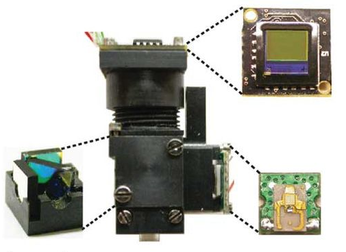

Miniscope

The Miniscope uses wide-field fluorescence imaging to record neural activity in awake, freely moving mice. It has a mass of 3 grams and uses a single, flexible coaxial cable for power, control signals, and imaging data. You can buy for just under two grand as well as other parts on labmaker.org.

You can read a paper detailing science on the miniscope in the Nature Methods journal.